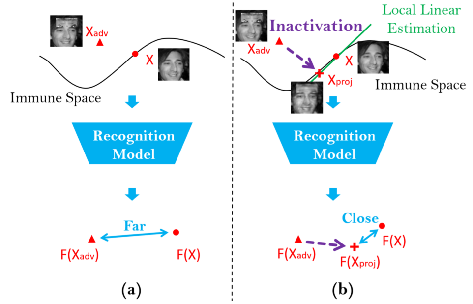
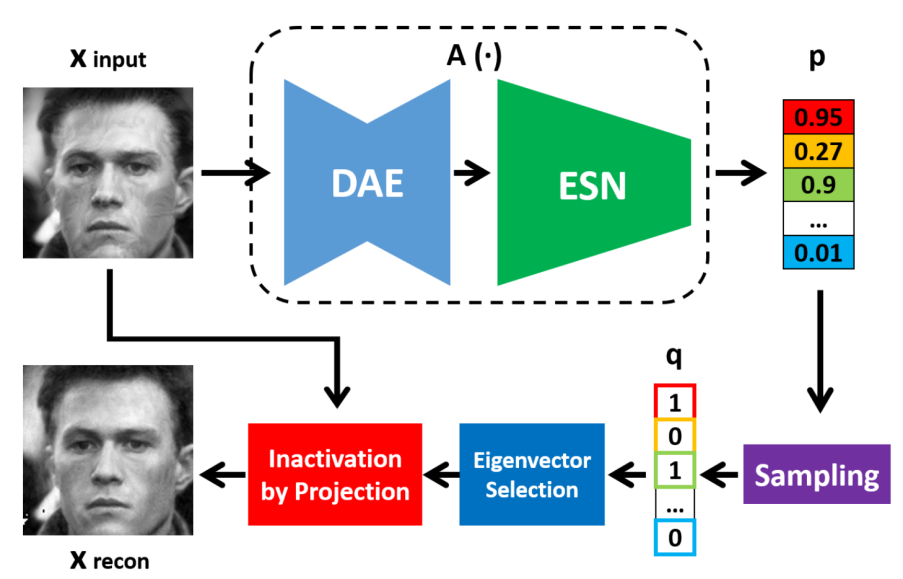

作者信息：
任民（北京师范大学），朱宇豪（中国铁道科学研究院），王云龙（中科院自动化所），孙哲南（中科院自动化所）
收录期刊：
IEEE Transactions on Information Forensics and Security (IEEE TIFS)
论文DOI:
https://ieeexplore.ieee.org/document/9845464/
代码链接：
https://github.com/RenMin1991/Perturbation-Inactivate
中国图象图形学学会CSIG：【速览】IEEE TIFS 2022 | 基于扰动灭活的人脸对抗防御
 